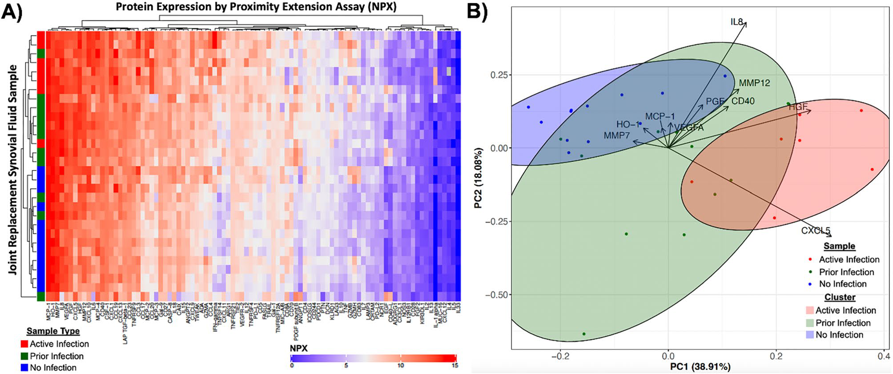
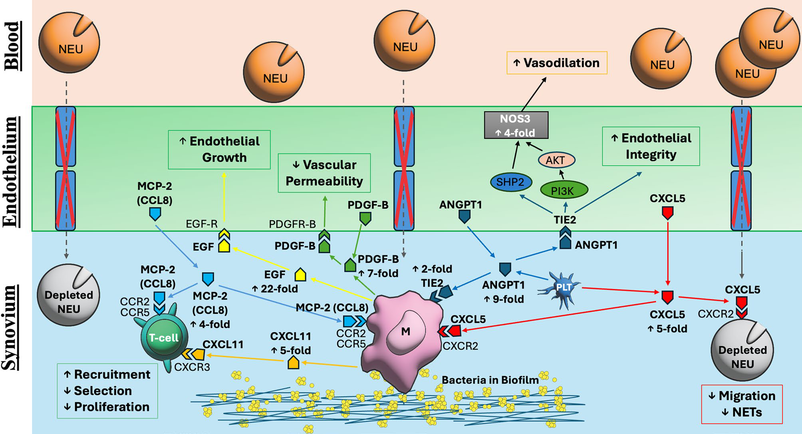
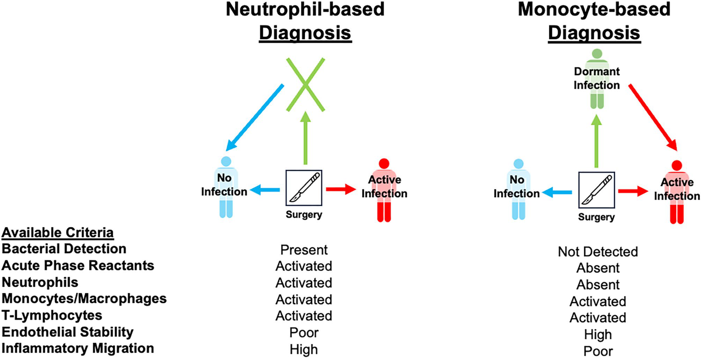

The blood tests said the joint was clean. The synovial fluid said otherwise — in 96 proteins.

An immune truce between host and microbe — neither eradicating the bacteria nor allowing full inflammatory resolution.— from the Discussion


An unseen threat becomes the next target for precision infection management.— closing line